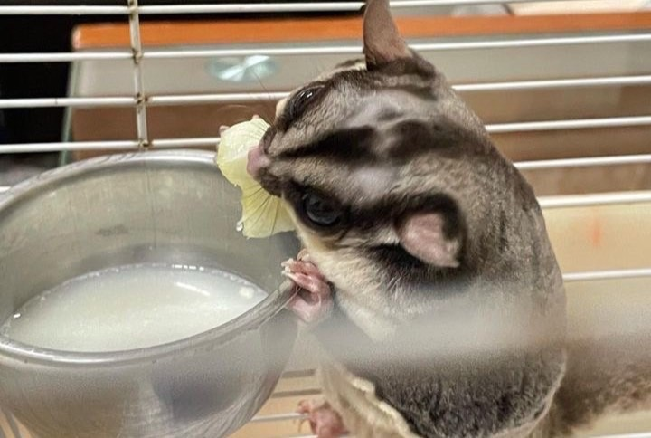
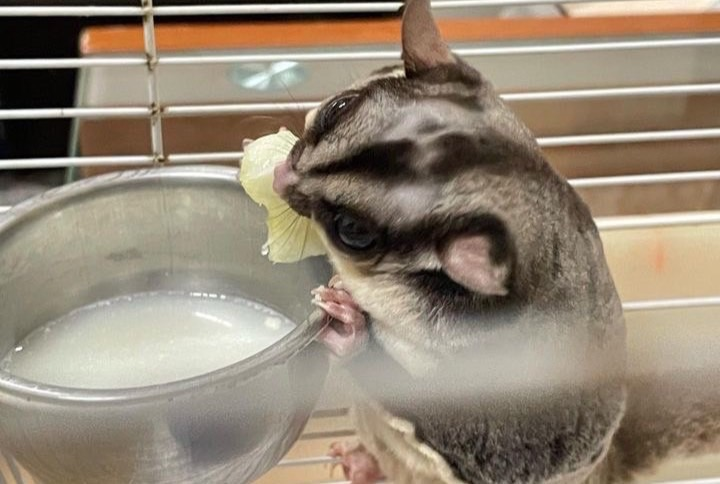

蜜袋鼯簡介
中文名稱：蜜袋鼯
英文名稱：sugar glider
【Sugar (糖)指的是牠們愛吃甜食(但不能因此就給太多)。】
【glider (滑翔者)指的是牠們的滑行的能力。】
小名：小蜜
【會叫小蜜是來自於牠們喜歡吃甜食。】
學名：Petaurus breviceps又稱短面袋鼯
為有袋類動物，是袋鼠的親戚，幾乎都在樹上活動
他們不是齧齒類動物 (千萬不可剪牙)。
不能剪牙!不能剪牙!!不能剪牙!!!
小蜜是夜行性動物，所以白天睡覺，晚上活動，且怕光。
【白天睡覺時，不一定會一覺到黑夜。】
【晚上時也不會一直活動。通常就是玩一玩，吃一吃，睡一睡，再起來玩。】
小蜜有非常敏銳的嗅覺。他們會用氣味來標示地盤，公蜜也會將氣味抹在同伴身上。
【所以如果你的身上有其他群的小蜜的味道，你很有可能會被咬。】
小蜜是雜食性的動物。牠們可以吃肉類（通常給予雞肉，不建議高油脂的豬肉牛肉）、昆蟲、蔬菜、水果、堅果、麥片... 等。
【所以與其問蜜可以吃什麼，還不如問牠們不能吃什麼。】
蜜算是動物界最挑食的動物之一。每天幫他們準備的食物，牠們不一定領情。
且小蜜是群居動物，一般建議至少養2隻以上。但如果飼主可以每天花至少兩三個小時互動與陪伴，也未必要養第二隻。
蜜是地域性很強的動物。
【如果接觸到其他群的蜜，蜜袋鼯可能有猛烈的攻擊行為】
小蜜是髒亂的食客。蜜吃東西因食道較小所以不會把東西全部吞下去，而會把渣給吐出來，而且會丟得到處都是 (包含籠外)。
且小蜜會近親繁殖。容易患有先天上的疾病，通常都會建議公母分籠，或是將公蜜結紮。
蜜一胎通常有1~3隻小幼蜜。1~2隻比較常見，三隻以上比較罕見。